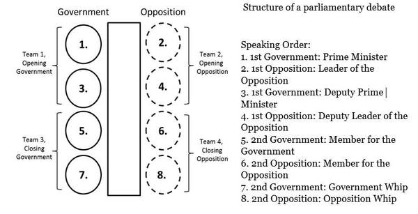

British parliamentary debate
In British Parliamentary debating participants take on the roles of government and opposition ministers arguing over a proposed motion by the government. The debates take place with 4 teams of two, with two teams on the government bench and two teams on the opposition bench. All the teams are competing against each other, even when debating for the same side, seeking to make the largest contribution and win the debate for their team. Debates require coordinating arguments with a partner and are won by teams, not individuals.

Structure of a parliamentary debate
Speaking Order is shown in the figure on the left.
Debaters are given their positions (Opening Government, Opening Opposition, Closing Government, and Closing Opposition) and the motion 15 minutes before the start of the debate. During preparation time no electronics may be used, however debates are rarely won by throwing facts out. Rather, they are won through the explanation of facts and the logic or mechanism that impacts the debate. In a debate, a team must maintain relevance throughout by choosing their arguments based on the clashing points between the teams, knocking down the other side’s arguments and sticking to their viewpoint of the case. During the speeches the adversary side can offer brief questions or statements, called points of information. Debates are won through logical links of assertions, induction and deduction, as well as the modes of persuasion Ethos, Pathos and Logos.